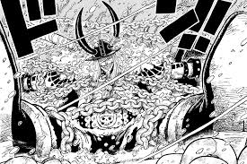

La tripulacion de Luffy
¿Porque son llamados asi?
"Mugiwara" (麦わら) en japonés significa "paja de trigo" o "paja de cebada". Sin embargo, en el contexto de la serie "One Piece", "Mugiwara" se traduce comúnmente como "Sombrero de Paja". Este término se refiere al famoso sombrero de paja que Monkey D. Luffy, el protagonista de la serie, usa, y también se usa para referirse a la tripulación de Luffy, los "Piratas del Sombrero de Paja".
¿cual es su historia?
Monkey D. Luffy
Luffy es el capitán de los Piratas del Sombrero de Paja. Desde niño soñó con convertirse en el Rey de los Piratas, inspirado por Shanks, quien le salvó la vida y le dejó su sombrero de paja como símbolo de confianza. Tras comer accidentalmente la Fruta Gomu Gomu, obtuvo un cuerpo de goma. A lo largo de su vida sufrió varias pérdidas dolorosas, como la muerte de su hermano Ace, pero su espíritu nunca se quebró. Su sueño no es simplemente ser el más fuerte, sino ser el más libre, y encontrar el legendario tesoro “One Piece”, cumpliendo su promesa y su libertad absoluta en el mar.

Roronoa Zoro
Zoro fue un espadachín que entrenaba incansablemente junto a Kuina, su rival y amiga de la infancia. Tras su trágica muerte, juró que se convertiría en el mejor espadachín del mundo en su honor. Conoció a Luffy cuando estaba a punto de ser ejecutado, y este lo salvó sin dudar. Desde entonces, se convirtió en su primer compañero. Zoro nunca pierde el rumbo: su objetivo es derrotar a Dracule Mihawk y cumplir su promesa a Kuina, todo sin desviar su lealtad hacia su capitán.
Nami
Nami fue adoptada por Bellemere, una marine que dio su vida por protegerla. Cuando Arlong, un cruel hombre-pez, conquistó su aldea, Nami fue forzada a trabajar para él, robando y cartografiando el mundo con la esperanza de liberar a su gente. Sufrió en silencio durante años hasta que Luffy llegó y enfrentó a Arlong por ella. Desde ese día, se unió a la tripulación como navegante. Su sueño es dibujar el mapa completo del mundo, con la libertad de decidir su propio destino.

Ussop
Usopp es un joven con una gran imaginación, hijo del valiente Yasopp. Creció contando mentiras para alegrar a su madre enferma, y tras su muerte, quedó solo. Aunque se muestra cobarde, en los momentos clave demuestra un valor inmenso. Luffy lo invita a unirse luego de verlo defender su aldea. Usopp sueña con ser un valiente guerrero del mar, como su padre, y con que sus historias algún día se vuelvan realidad.

Vismoke Sanji
Sanji creció en el Baratie, un barco restaurante, luego de ser rescatado por Zeff, un pirata que perdió una pierna para salvarlo del hambre. Desde entonces, juró que jamás dejaría morir de hambre a nadie. Aunque proviene de una familia noble que lo maltrataba, Sanji elige vivir según sus propios principios. Se une a Luffy porque este lo acepta sin juzgarlo. Su mayor sueño es encontrar el All Blue, un mar mítico donde se cruzan peces de todos los océanos, para cocinar los mejores platos del mundo.

Tony Tony Chopper
Chopper es un reno que comió la Hito Hito no Mi, lo que lo transformó en una criatura medio humana. Fue rechazado por los renos por ser diferente, y por los humanos por su apariencia. Fue adoptado por el Dr. Hiluluk, quien le enseñó sobre medicina y esperanza antes de morir. Luego fue entrenado por la Dra. Kureha. Cuando conoce a Luffy, este lo acepta sin miedo, y Chopper se une como médico de la tripulación. Su sueño es curar cualquier enfermedad del mundo, para que nadie más sufra como él lo hizo.
Nico Robin
Robin es una arqueóloga nacida en Ohara, una isla destruida por el Gobierno Mundial cuando ella era solo una niña. Sobrevivió siendo perseguida durante toda su vida por saber leer los Poneglyphs, algo prohibido por la historia que el gobierno quiere ocultar. Al principio se une a la tripulación como enemiga, pero con el tiempo confiesa que lo único que deseaba era vivir. Su verdadero sueño es descifrar la historia perdida del mundo y descubrir la verdad del “Siglo Vacío”.
Franky
Franky fue un huérfano abandonado, criado por Tom, el legendario carpintero que construyó el barco de Gol D. Roger. Tras la muerte injusta de su mentor, se reconstruyó a sí mismo como un cyborg. Aunque vivió ocultando su dolor, Luffy y su tripulación le ofrecieron un lugar donde pertenecer. Franky se une como carpintero y constructor de su nuevo barco, el Thousand Sunny. Su sueño es crear un barco que pueda dar la vuelta al mundo, y que sus nakamas lo logren.

Brook
Brook fue el músico de otra tripulación, pero tras morir y ser revivido por una Fruta del Diablo, pasó décadas solo en un barco fantasma. Lo único que lo mantenía cuerdo era su promesa a Laboon, una ballena que lo esperaba desde hacía 50 años. Aunque parece alegre, carga con una gran soledad. Luffy lo invita a unirse y Brook acepta con gratitud. Su sueño es reunirse con Laboon y hacerle cumplir su promesa de escuchar su música nuevamente.
Jinbe
Jinbe es un hombre-pez que luchó durante años por la igualdad entre humanos y su raza. Fue discípulo de Fisher Tiger y parte de los Piratas del Sol. Conoció a Luffy en momentos cruciales, como Marineford, y vio en él el futuro que el mundo necesitaba. Admirando su determinación, se une como timonel. Su sueño es lograr una verdadera convivencia pacífica entre humanos y hombres-pez, algo que lucha por construir junto a la tripulación del sombrero de paja.

Posibles proximos mugiwaras
Yamato
Yamato, la hija de Kaido. Durante el arco de Wano, se mostró como una gran aliada de Luffy, compartiendo su sueño de libertad y admirando a Oden Kozuki, al punto de querer seguir sus pasos. Tiene un enorme poder físico, el respeto de los samuráis de Wano, y una voluntad muy cercana a la de Luffy. Aunque al final del arco decidió quedarse en Wano para conocer mejor el país de Oden, su vínculo con la tripulación, especialmente con Luffy, es profundo. Su entrada aún es posible si se reincorpora más adelante. Por otro lado, Carrot, la mink que viajó con los Mugiwara desde Zou, también es una opción, aunque menos probable tras no unirse al final de Wano. Sin embargo, tuvo un desarrollo importante, conectó con varios miembros de la tripulación y mostró una gran fuerza durante la guerra.
Vivi
Vivi, la princesa de Arabasta, que aunque ya fue considerada una miembro honoraria de los Mugiwara, podría unirse de forma definitiva más adelante, especialmente ahora que el Gobierno Mundial apunta contra su familia. Su regreso tendría sentido emocional y político. En cuanto a personajes más recientes, Bonney ha ganado protagonismo durante el arco de Egghead. Si bien aún no hay señales claras de que quiera unirse, su conexión con Kuma y Vegapunk, su valentía, y su historia trágica la hacen una incorporación posible. En todos los casos, Luffy tiende a invitar personas con sueños fuertes, pasados dolorosos, y un deseo de libertad. Por eso, el próximo Mugiwara probablemente cumpla con ese patrón, más allá del poder de combate.
Loki
Uno de los candidatos más misteriosos es Loki, el príncipe de Elbaf, la isla de los gigantes. Aunque aún no ha aparecido en el manga de forma directa, fue mencionado durante Whole Cake Island como el gigante que quería casarse con Lola. Elbaf es una isla que Oda viene insinuando desde hace años, y muchos fans creen que será uno de los próximos destinos importantes. Luffy siempre soñó con conocer a los gigantes y visitar Elbaf, así que es muy probable que un arco allí sea inevitable. Si Loki resulta ser un personaje noble, fuerte y carismático —quizás incluso en conflicto con la tiranía o la tradición guerrera de su pueblo—, podría encajar perfectamente con la dinámica de los Sombrero de Paja. Además, nunca tuvieron un gigante como tripulante real, y eso daría variedad y un enorme poder físico al grupo, algo que sería útil en la batalla final.
